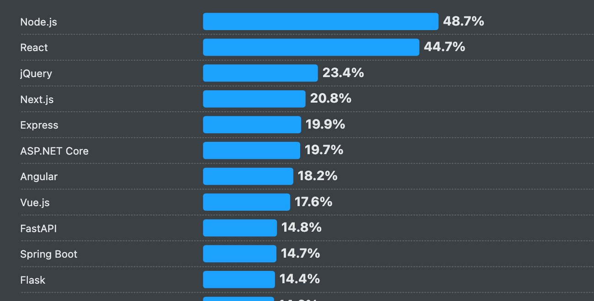
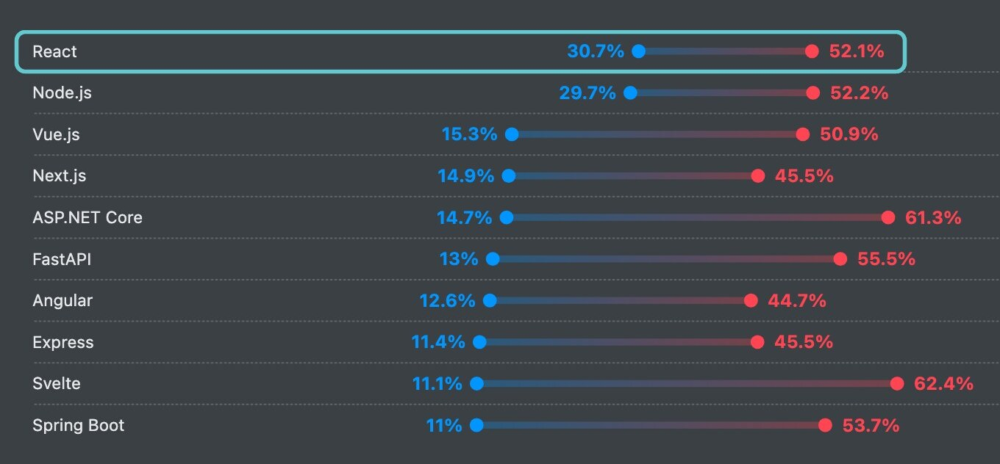

WU-E26A · RACE 8 · 6. oktober 2026
Thinkingin React
Fra nyt Vite-projekt til et grid af users. Components, props og state i jeres egen my-first-react-app.
Sådan arbejder vi i dag
Skriv koden selv
Slå Copilot fra: klik på Copilot-ikonet nederst til højre i VS Code, og fjern fluebenet ved Ghost text suggestions og Next edit suggestions
Skriv koden fra slides selv. Kopiér den ikke
Laver I en fejl, så læs fejlbeskeden, og ret den
Kopiér kun kommandoer, CSS og data og URL fra users.json
Koden skal ind gennem fingrene. Det er sådan, I lærer den.
Dagens mål
Det her har I bygget, når dagen er slut
Et React-projekt med Vite
En Header-component
En User-component, der får data via props
En UserList, der viser én User pr. person i et grid
Data hentet fra en rigtig URL
Hver del af dagen ender med en øvelse i jeres eget projekt. Byg med, mens vi går.
Dagens mål · del 2
Og så i gang med chatbot-tutorialen
Chatbot + New
How to learn programming? What are the best pizza toppings? Can you explain quantum physics? Help me create a morning routine What should I do this weekend? Why is the sky blue? How do I learn a new language? What's the meaning of life? Tell me a funny joke What's a healthy dinner idea? Recommend me a good book Give me a creative writing prompt Hello! Can you help me understand React Router v7?
Of course! React Router v7 is the latest version, with better data loading and nested routing.
How do nested routes work in v7?
Nested routes let you build hierarchical UI. A parent route shows child routes in an <Outlet />.
What's the difference between route() and layout() helpers?
Great question! route() adds URL segments, while layout() only adds UI structure.
Type your message here... Send
Samme ting, som I laver i my-first-react-app. Bare i et større projekt.
Det er den app, I bygger videre på resten af forløbet. Step 1 og 2 skal være færdige til i morgen.
01
Intro til React
Hvad, hvorfor
Et JavaScript-bibliotek til at bygge brugerflader. Lavet af Meta og brugt af Facebook, Instagram, Netflix og Airbnb.
Video · Fireship · på engelsk
React in 100 Seconds
Hold øje med tre ord, der kommer igen hele dagen: components , JSX og state .
React på tre kort
Et bibliotek til UI, der kører i browseren
Hvad
Kun UI'et
React bygger det, brugeren ser og klikker på. Ikke server, database eller routing.
UI React
Routing
Server
Database
Hvorfor
Components
UI'et bygges af små, genbrugelige dele. Siden opdateres selv, når data ændrer sig. Stort økosystem og stort jobmarked.
Hvordan
I browseren
React bygger siden i browseren med JavaScript. Det er client-side rendering , som I præsenterede i sidste uge.
server sender <div id="root"></div>+ JavaScript
↓ browseren bygger
Hvorfor React? · Stack Overflow Developer Survey 2025
Det mest brugte frontend-værktøj. Og det, flest vil arbejde med

1 Brugt det seneste år: React er nr. 2 med 44,7 % . Kun Node.js er større, og det kører på serveren.

2 Vil arbejde med næste år: React er nr. 1 med 30,7 % (blå). Rød er dem, der bruger det og vil blive ved.
React er det, I møder i jobopslag og i praktikken. Kilde: survey.stackoverflow.co/2025 , 23.678 svar.
Imperativ vs. deklarativ
Den samme overskrift, to måder
Imperativ · I siger hvordan, trin for trin
🚕 "Ligeud. Til venstre ved lyset. Stop her."
const h1 = document.createElement("h1");
h1.textContent = "Users";
document.body.append(h1);I browseren Users
→
Deklarativ · I siger hvad, browseren gør resten
🚕 "Aarhus C, tak."
<h1>Users</h1>I browseren Users
I kender allerede begge dele. HTML og CSS er deklarativt. DOM-kode i JavaScript er imperativt.
Imperativ vs. deklarativ
Den samme liste af users, tre måder
Imperativ · insertAdjacentHTML
for (const user of users) {
grid.insertAdjacentHTML(
"beforeend",
`<article>
<h2>${user.name}</h2>
<p>${user.title}</p>
</article>`
);
}
Imperativ · createElement
for (const user of users) {
const card = document.createElement("article");
const h2 = document.createElement("h2");
h2.textContent = user.name;
const p = document.createElement("p");
p.textContent = user.title;
card.append(h2, p);
grid.append(card);
}
Deklarativ · React
function App() {
return (
<section className="grid">
{users.map(user => (
<article key={user.id}>
<h2>{user.name}</h2>
<p>{user.title}</p>
</article>
))}
</section>
);
}
I de to første bygger I selv DOM'en i grid, trin for trin. I React beskriver I, hvordan listen skal se ud. React sætter den ind.
To og to · 3 minutter
Hvad sker der, når users ændrer sig?
A Imperativ · insertAdjacentHTMLfor (const user of users) {
grid.insertAdjacentHTML(
"beforeend",
`<article>
<h2>${user.name}</h2>
<p>${user.title}</p>
</article>`
);
}
Anne bliver tilføjet til users. Hvad skal I skrive i A , før hun dukker op på siden?
I kører løkken i A én gang til. Hvad står der nu i grid'et?
Dan bliver slettet fra users. Hvordan får I hans kort væk i A ?
B Deklarativ · Reactfunction App() {
return (
<section className="grid">
{users.map(user => (
<article key={user.id}>
<h2>{user.name}</h2>
<p>{user.title}</p>
</article>
))}
</section>
);
}
Samme tre tilfælde i B : Anne kommer til, koden kører igen, Dan bliver slettet. Hvad skal I skrive her?
Kerneidéen
1 I skriver en funktion, der viser data2 Data ændrer sig, og funktionen kører igen3 React sørger for, at DOM'en passer
UI = f(data) · i billeder
Samme funktion. Nye data. Nyt UI.
[
{ name: "Dan" },
{ name: "Magnus" },
{ name: "Rasmus" }
]
→
App()jeres funktion
→
Users
Dan Okkels Brendstrup Senior Lecturer
Magnus Lindholm Nielsen Lecturer
Rasmus Cederdorff Senior Lecturer
[
{ name: "Dan" },
{ name: "Magnus" },
{ name: "Rasmus" },
{ name: "Anne" }
]
→
App()kører igen
→
Users
Dan Okkels Brendstrup Senior Lecturer
Magnus Lindholm Nielsen Lecturer
Rasmus Cederdorff Senior Lecturer
Anne Kirketerp Head of Department
I rører aldrig DOM'en. I ændrer data , og React kører funktionen igen.
Virtual DOM
React ændrer kun det, der er forskelligt
1
Første gang
React bygger et træ af JavaScript-objekter og sætter hele siden ind i DOM'en.
→
↻ Hver gang
2 Data ændrer sig Fx kommer der en ny user.
3 Nyt træ Jeres component kører igen.
4 Sammenlign Nyt træ mod forrige træ. Hvad er forskelligt?
5 Ret DOM'en Kun forskellen bliver ændret på siden.
Trin 1 sker én gang. Trin 2 til 5 sker igen, hver gang data ændrer sig. I ser det i praksis om lidt i DevTools.
Virtual DOM · i billeder
Der kommer en ny user. Hvad ændrer React?
1 Forrige træsection.grid article Dan article Magnus article Rasmus
→sammenlign
2 Nyt træsection.grid article Dan article Magnus article Rasmus article Anne ny
→ret kun
3 Rigtig DOMUsers
Dan Okkels Brendstrup Senior Lecturer
Magnus Lindholm Nielsen Lecturer
Rasmus Cederdorff Senior Lecturer
Anne Kirketerp Head of Department
Tre kort bliver ikke rørt. Ét nyt <article> bliver sat ind.
Træerne er bare JavaScript-objekter. At sammenligne dem er hurtigt. At røre DOM'en er langsomt.
02
Nyt projekt med Vite
my-first-
Vite er et build-værktøj og en udviklingsserver. Den forstår JSX og opdaterer siden, så snart I gemmer.
Øvelse 1 · Opret projektet
Nyt React-projekt med Vite
Opret mappen my-first-react-app, der hvor du har dine kodeprojekter
Åbn kun den mappe i VS Code: File › Open Folder
Terminal › New Terminal . På Windows: vælg Command Prompt Tjek Node: node -v. Mindst 20.19 eller 22.12
Kør kommandoen, og vælg React , JavaScript og Oxlint
Svar Yes til at installere og starte. Åbn den URL, terminalen viser
Terminal i VS Code
npm create vite@latest .Punktummet betyder: lav projektet i den mappe, du står i.
Næste gang du vil starte serveren
npm run dev
Lad være med at overtænke alle de nye ting. Gør det, og følg trinene.
Øvelse 1 · Sådan ser det ud
Kun projektmappen er åben i VS Code
Explorer viser kun my-first-react-app, og mappen er tom
Terminalen står allerede i mappen. Intet cd
Kør npm create vite@latest .
Står der en anden mappe i Explorer, så åbn den rigtige med File › Open Folder .
En tur rundt i projektet
Tre filer er vigtige i dag
my-first-react-app/
├── node_modules/
├── public/
├── src/
│ ├── App.css
│ ├── App.jsx
│ ├── index.css
│ └── main.jsx
├── index.html
├── package.json
└── vite.config.js
index.htmlÉn tom <div id="root">. Her bygger React siden
src/main.jsxStarter appen og monterer <App /> i #root
src/App.jsxJeres første component. Her skriver I koden i dag
node_modules/Installerede pakker. Rør den ikke
package.jsonProjektets pakker og scripts, fx npm run dev
Sådan kommer App på skærmen
Fra en tom #root til en hel side
1 index.html<body>
<div id="root"></div>
<script
type="module"
src="/src/main.jsx"
></script>
</body>
En tom kasse og et script
→indlæser
2 src/main.jsximport App from "./App.jsx" ;
createRoot(
document.getElementById("root" )
).render(<App /> );Find #root, og vis <App /> i den
→importerer
3 src/App.jsxexport default
function App() {
return (
<h1> Users</h1>
);
}Returnerer det, der skal vises
→vises
4 Elements
<body>
<div id="root">
fra App Users
I dag skriver I kun i App.jsx og jeres egne components. index.css kopierer I ind én gang. index.html og main.jsx rører I ikke.
Øvelse 2 · Kig og prøv
Ret, gem og se Virtual DOM arbejde
Ret teksten Get started i src/App.jsx, og gem. Siden opdaterer uden genindlæsning
Åbn src/main.jsx. Find stedet, hvor <App /> bliver vist i #root. <StrictMode> omkring den er en hjælper under udvikling. Den kører noget af jeres kode to gange
Åbn DevTools, og vælg Elements -panelet
Tryk på tæller-knappen. Kun tallet i knappen blinker. Resten af siden bliver ikke rørt
Det blink er Virtual DOM: React ændrer kun den ene tekst, der er forskellig.
03
JSX
Ligner HTML,
Det, en component returnerer. Vite oversætter det til almindelig JavaScript, som browseren forstår.
Hvad er JSX?
HTML-lignende tags i JavaScript
I skriver · JSX
const name = "Rasmus";
const element = (
<h2 className="title">
Hello, {name}
</h2>
);
→Vite
Browseren får · almindelig JavaScript
const name = "Rasmus";
const element = React.createElement(
"h2",
{ className: "title" },
"Hello, ",
name
);
JSX står for JavaScript XML. Hvert tag bliver til et funktionskald. Det hele er JavaScript, så I kan sætte værdier ind med { }.
JSX-regler
Fire ting, der er anderledes end HTML
export default function App() {
const name = "Rasmus";
return (
<>
<h1 className="title">Users</h1>
<h2>Hello, {name}</h2>
<img src="logo.png" alt="" />
</>
);
}
className i stedet for classclass er et reserveret ord i JavaScript
Alle tags skal lukkes <img />, <br />, <input />
Ét rod-element Pak flere elementer ind i et fragment <>...</>
{ } indsætter JavaScriptEn variabel, en template literal eller en .map()
Øvelse 3 · Ryd op og CSS
Jeres første JSX
Erstat alt i src/App.jsx med koden til højre
Slet filen src/App.css
Åbn index.css ↗ , kopiér alt, og erstat indholdet i src/index.css. Så er stylingen klar til resten af dagen
Skriv jeres eget navn i name, og tilføj selv et par elementer, fx en <p>
Fjern <main> og </main>. Læs fejlen. Sæt dem ind igen
src/App.jsx
export default function App() {
const name = "Rasmus";
return (
<main className="app">
<h1>Users</h1>
<h2>Hello, {name}</h2>
</main>
);
}
Test: siden er mørk og viser kun jeres overskrift og jeres navn. CSS'en rører I ikke mere i dag.
04
Thinking in React
UI'et er bygget
Components, der får data via props og husker data i state. Det er hele tankegangen.
Thinking in React
Tre begreber bærer resten af forløbet
Components
Byggeklodser
En funktion, der returnerer JSX. Små dele, der sættes sammen til hele siden.
function User() {
return <article>…</article>;
}I kender: en funktion, I kalder igen og igen
Props
Data ind udefra
App sender data ned til User. Samme component, forskellige data.
<User name="Anne" />
<User name="Dan" />I kender: attributter i HTML, fx src
State
Data, der ændrer sig
Data, som componenten husker. Ændrer state sig, tegnes UI'et igen.
const [users, setUsers] =
useState([]);I kender: en variabel. Mere i morgen
Øvelse 4 · To og to · 10 minutter
Tegn kasser om de dele, der hører sammen
Tegn kasser om dele, der hører sammen. Giv hver kasse et navn
Hvilke kasser går igen?
Tegn kasserne som et træ: hvem ligger inden i hvem?
Hvilke data skal hver kasse bruge?
Papir, iPad eller et screenshot. Sammenlign med jeres sidemakker: hvor har I skåret forskelligt?
Vores bud
Fire components, og én af dem går igen
App
├──
└── UserList
└── User × én pr. person
User skal bruge name, title, mail og imageUserList får alle users og laver én User pr. personApp har listen af users og sender dem videre
Det er det træ, I bygger resten af dagen. Der findes ikke ét rigtigt svar.
Øvelse 4 · Samme øvelse, en anden app
Chatbotten: hvor tegner I kasserne her?
Chatbot + New
How to learn programming? What are the best pizza toppings? Can you explain quantum physics? Help me create a morning routine What should I do this weekend? Why is the sky blue? How do I learn a new language? What's the meaning of life? Tell me a funny joke What's a healthy dinner idea? Recommend me a good book Give me a creative writing prompt Hello! Can you help me understand React Router v7?
Of course! React Router v7 is the latest version, with better data loading and nested routing.
How do nested routes work in v7?
Nested routes let you build hierarchical UI. A parent route shows child routes in an <Outlet />.
What's the difference between route() and layout() helpers?
Great question! route() adds URL segments, while layout() only adds UI structure.
Type your message here... Send
Tegn kasser, og giv dem navne
Hvilke kasser går igen?
Hvilken kasse svarer til UserList? Og til User?
Samme spørgsmål som før. Kun appen er en anden.
Vores bud · chatbotten
Ti components, og to af dem går igen
Chatbot + New
How to learn programming? What are the best pizza toppings? Can you explain quantum physics? Help me create a morning routine What should I do this weekend? Why is the sky blue? How do I learn a new language? What's the meaning of life? Tell me a funny joke What's a healthy dinner idea? Recommend me a good book Give me a creative writing prompt Hello! Can you help me understand React Router v7?
Of course! React Router v7 is the latest version, with better data loading and nested routing.
How do nested routes work in v7?
Nested routes let you build hierarchical UI. A parent route shows child routes in an <Outlet />.
What's the difference between route() and layout() helpers?
Great question! route() adds URL segments, while layout() only adds UI structure.
Type your message here... Send
Layout
├── Sidebar
│ ├──
│ ├── ChatThreadsList
│ │ └── ChatThreadItem × 14
│ └──
└── Home
├── ChatMessages
│ └── Message × 10
└──
Samme farver som users-appen: gul holder en liste, grøn går igen.
05
Components og props
En funktion,
Navnet starter med stort bogstav, så React kan kende forskel på jeres components og almindelige HTML-tags.
Component
Én fil pr. component, brugt som et tag
src/components/Header.jsx
export default function Header() {
return (
<header>
<h1>Users</h1>
<p>Mine første React components</p>
</header>
);
}
→
src/App.jsx
import Header from "./components/Header";
export default function App() {
return (
<main className="app">
<Header />
</main>
);
}
export default i den ene fil, import i den anden. Samme moduler, som I brugte i jeres Express-routes.
Øvelse 5 · Første component
Flyt overskriften ud i en Header
Opret mappen src/components
Opret Header.jsx i mappen
Flyt <h1> fra App.jsx over i Header, og tilføj en <p>
Importér Header i App.jsx, og brug den som <Header />
Slet <h2>Hello...</h2> og name i App.jsx
Omdøb <Header /> i App.jsx til <header /> med lille h. Hvad sker der?
src/components/Header.jsx
export default function Header() {
return (
<header>
<h1>Users</h1>
<p>Mine første React components</p>
</header>
);
}
Test: overskriften står præcis som før. Nu kommer den bare fra sin egen component.
Øvelse 6 · User-component
Ét kort med én person
Opret src/components/User.jsx med koden til højre
Importér User i App.jsx
Brug <User /> under <Header />
Brug den to gange mere. Nu har I tre kort
Hvad er problemet med de tre kort?
src/components/User.jsx
export default function User() {
return (
<article className="user-card">
<img
src="https://raw.githubusercontent.com/cederdorff/race/master/images/users/race.webp"
alt="Rasmus Cederdorff"
/>
<h2>Rasmus Cederdorff</h2>
<p>Senior Lecturer</p>
<a href="mailto:race@eaaa.dk">race@eaaa.dk</a>
</article>
);
}
Test: tre ens kort under headeren. De fylder hele bredden indtil videre. Det retter I i øvelse 7.
Props
Samme component, forskellige data
src/App.jsx · sender props som attributter
<User
name="Rasmus Cederdorff"
title="Senior Lecturer"
mail="race@eaaa.dk"
image="https://.../race.webp"
/>
→
src/components/User.jsx · læser dem som parametre
export default function User({ name, title, mail, image }) {
return (
<article className="user-card">
<img src={image} alt={name} />
<h2>{name}</h2>
<p>{title}</p>
<a href={`mailto:${mail}`}>{mail}</a>
</article>
);
}
{ name, title, mail, image } henter felterne ud af ét props-objekt. Props går kun nedad, fra App til User.
Props · i billeder
Én component, tre sæt props, tre kort
<User
name="Dan Okkels Brendstrup"
title="Senior Lecturer"
... /> →
<User
name="Magnus Lindholm Nielsen"
title="Lecturer"
... /> →
<User
name="Rasmus Cederdorff"
title="Senior Lecturer"
... /> →
User.jsx · én gang
{image}
{name}
{title}
{mail}
→
Tre kort på siden
Dan Okkels Brendstrup Senior Lecturer dob@eaaa.dk
Magnus Lindholm Nielsen Lecturer magl@eaaa.dk
Rasmus Cederdorff Senior Lecturer race@eaaa.dk
Componenten er skabelonen. Props er de data, der bliver sat ind i hullerne.
Øvelse 7 · Props
Giv hver User sine egne data
Tilføj { name, title, mail, image } i User-funktionen
Erstat de faste værdier i JSX'en med {name}, {title} osv.
Send props til de tre <User /> i App.jsx med tre personer fra users.json ↗
Pak de tre <User /> ind i en <section className="grid">. .grid står allerede i jeres CSS
Fjern title fra én af dem. Hvad viser kortet?
src/App.jsx
<main className="app">
<Header />
<section className="grid">
<User
name="Rasmus Cederdorff"
title="Senior Lecturer"
mail="race@eaaa.dk"
image="https://raw.githubusercontent.com/cederdorff/race/master/images/users/race.webp"
/>
<User name="..." title="..." mail="..." image="..." />
<User name="..." title="..." mail="..." image="..." />
</section>
</main>
Test: tre forskellige personer ved siden af hinanden i et grid. Én component, tre gange.
06
Lister
Ét array,.map()
Tre <User /> skrevet i hånden holder ikke, når der kommer flere. Eller 900.
Lister
Data i et array, ét element pr. objekt
Før · skrevet i hånden
<User name="Dan" ... />
<User name="Magnus" ... />
<User name="Rasmus" ... />
→
Efter · data styrer, hvad der vises
const users = [
{ id: "HlvR...", name: "Dan", ... },
{ id: "esCq...", name: "Magnus", ... }
];
{users.map(user => (
<User key={user.id} name={user.name} ... />
))}
key skal være unik, så React kan holde styr på hvert element mellem to renders. Brug id.
.map() · i billederÉt objekt ind, ét element ud
users { id: "HlvR…" ,
name: "Dan" } { id: "esCq…" ,
name: "Magnus" } { id: "fTs8…" ,
name: "Rasmus" }
users.map(user => <User key={user.id} name={user.name} … /> )
JSX <User key="HlvR…"
name="Dan" /> <User key="esCq…"
name="Magnus" /> <User key="fTs8…"
name="Rasmus" /> ↓ ↓ ↓
skærm Dan Okkels Brendstrup Senior Lecturer dob@eaaa.dk
Magnus Lindholm Nielsen Lecturer magl@eaaa.dk
Rasmus Cederdorff Senior Lecturer race@eaaa.dk
Tre objekter giver tre <User />. 900 objekter giver 900. Koden er den samme.
Øvelse 8 · Lister
Fra tre <User /> til users.map()
Opret et users-array i App. Kopiér 3-4 objekter fra users.json ↗
Slet de tre <User /> i <section className="grid">
Vis i stedet én User pr. objekt med users.map()
Tilføj et objekt mere i arrayet. Det dukker op af sig selv
Fjern key. Læs advarslen i Console. Sæt den ind igen
src/App.jsx
export default function App() {
const users = [
// kopiér objekter fra users.json herind
];
return (
<main className="app">
<Header />
<section className="grid">
{users.map(user => (
<User
key={user.id}
name={user.name}
title={user.title}
mail={user.mail}
image={user.image}
/>
))}
</section>
</main>
);
}
Test: ét kort pr. objekt i arrayet. Koden er den samme, uanset hvor mange objekter der er.
Øvelse 9 · Før og efter
Data flyder nedad gennem træet
Nu · efter øvelse 8
App har users
User × én pr. person ← name title mail image
App laver både data og .map()
Efter øvelse 9
App har users
UserList ← users
User × én pr. person ← name title mail image
App har data. UserList laver .map()
Props går kun nedad i træet: App → UserList → User, ét niveau ad gangen.
Øvelse 9 · UserList
Flyt listen ud i en UserList
Opret UserList.jsx i src/components
Flyt grid'et med users.map() fra App over i UserList
Flyt import User med over
Brug UserList i App, og send users={users} med
Fjern users={users}. Læs fejlen i Console. Sæt den ind igen
src/components/UserList.jsx
import User from "./User";
export default function UserList({ users }) {
return (
<section className="grid">
{users.map(user => (
<User
key={user.id}
name={user.name}
title={user.title}
mail={user.mail}
image={user.image}
/>
))}
</section>
);
}
src/App.jsx · return
return (
<main className="app">
<Header />
<UserList users={users} />
</main>
);
Test: siden ser ud præcis som før. Nu har I alle fire kasser fra øvelse 4.
07
Hent rigtige data
Just do it.
Data fra en URL kræver useState og useEffect. I dag skriver I dem. I morgen ser vi på, hvad de gør.
To nye ting, kort
State husker data. En effect henter dem.
useState
Huskede data
Giver jer users og en funktion, der ændrer dem.
const [users, setUsers] =
useState([]);Kald setUsers, og UI'et tegnes igen
useEffect
Kode efter render
Kører, efter componenten er vist. Med [] kun én gang.
useEffect(() => {
// hent data her
}, []);Et godt sted at hente data
fetch
Det kender I
Samme fetch og await, som I har brugt før.
const response = await fetch(url);
const data = await response.json();Det eneste nye er, hvor koden står
Øvelse 10 · Hent data · del 1
Hent data, og log dem i Console
Importér useState og useEffect fra "react"
Erstat jeres const users = [...] med useState([])
Tilføj useEffect med fetchUsers() lige under. URL'en må I kopiere fra users.json ↗
Åbn Console. Kan I se et array med users?
Står det der to gange? Det er normalt under udvikling
src/App.jsx · øverst
import { useEffect, useState } from "react";
// import Header og UserList som før
export default function App() {
const [users, setUsers] = useState([]);
useEffect(() => {
async function fetchUsers() {
const url = "https://raw.githubusercontent.com/cederdorff/race/refs/heads/master/data/users.json";
const response = await fetch(url);
const data = await response.json();
console.log(data);
}
fetchUsers();
}, []);
// return (...) som førsetUsers bruger I først i del 2. Viser VS Code en advarsel om den, er det derfor.
To gange i Console kommer fra <StrictMode> i main.jsx, som I så i øvelse 2.
Test: Console viser et array med users. Siden viser kun headeren, for users er stadig et tomt array.
Øvelse 10 · Hent data · del 2
Gem data i state, og se grid'et fyldes
Erstat console.log(data) med setUsers(data)
Gem. Nu viser grid'et alle users fra filen
Åbn Elements-panelet. Ét <article> pr. user
Stav URL'en forkert, fx users.jsn. Læs begge fejl i Console: en 404 og en JSON-fejl. Ret den igen
src/App.jsx
useEffect(() => {
async function fetchUsers() {
const url = "https://raw.githubusercontent.com/cederdorff/race/refs/heads/master/data/users.json";
const response = await fetch(url);
const data = await response.json();
setUsers(data);
}
fetchUsers();
}, []);
Test: grid'et viser alle users fra filen. Header, UserList og User er ikke ændret.
Hele vejen
Fra URL til kort på skærmen
1
Første render
users er [], så kun headeren vises. Bagefter kører effecten fetch(url).
→
↻ Hver gang
2 setUsers(data)State ændrer sig
3 App kører igenSender users ned til UserList
4 users.map()Én <User /> pr. objekt
5 Props name, title … ned i User
6 DOM React indsætter kun det, der er nyt
Trin 1 sker én gang. Trin 2 til 6 sker, hver gang setUsers bliver kaldt. Components, props og state i én app.
Øvelse 11 · GitHub
Commit og push jeres første React-app
Åbn Source Control i VS Code, og klik Initialize Repository
Skriv en commit-besked, fx My first React app , og klik Commit
Klik Publish Branch , og vælg et public repository
Ret noget i appen, commit igen, og klik Sync Changes
node_modules kommer ikke med. Den står allerede i .gitignore.
08
Chatbot-tutorialen
Det samme igen,
Step 1 og 2 i tutorialen bruger det, I lige har lavet. Nu i et større projekt.
Chatbot step 1 · før og efter
Fra to store filer til små components
Startpunktet
app/routes/layout.jsxLayout
<aside> header 14 × <li> skrevet i hånden footer </aside>
app/routes/home.jsxHome
10 × <div className="message"> <textarea> og Send
→step 1
Efter step 1
app/components/Sidebar.jsxSidebar SidebarHeader ChatThreadsList ChatThreadItem SidebarFooter
app/components/Chat.jsxChatMessages Message ChatInput
app/routes/layout.jsxLayout → bruger <Sidebar />
app/routes/home.jsxHome → bruger <ChatMessages /> og <ChatInput />
Samme træk som jeres src/components. Her hedder mappen app/components, og siden ser ud præcis som før.
Container og item
Samme form tre steder
my-first-react-app
Dan Okkels Brendstrup Senior Lecturer
Magnus Lindholm Nielsen Lecturer
Props: name, title, mail, image
Chatbot · sidebaren
How to learn programming?
What are the best pizza toppings?
Can you explain quantum physics?
Props: href, title
Chatbot · chatten
How do nested routes work in v7?
Nested routes allow you to create hierarchical UI structures.
Props: type og teksten
En container holder listen. Et item viser ét element og går igen. Det har I allerede bygget i dag.
Chatbot step 1 · på ét billede
Udefra og ind, én kasse ad gangen
Chatbot + New
How to learn programming? What are the best pizza toppings? Can you explain quantum physics? Help me create a morning routine What should I do this weekend? Why is the sky blue? How do I learn a new language? What's the meaning of life? Tell me a funny joke What's a healthy dinner idea? Recommend me a good book Give me a creative writing prompt Hello! Can you help me understand React Router v7?
Of course! React Router v7 is the latest version, with better data loading and nested routing.
How do nested routes work in v7?
Nested routes let you build hierarchical UI. A parent route shows child routes in an <Outlet />.
What's the difference between route() and layout() helpers?
Great question! route() adds URL segments, while layout() only adds UI structure.
Type your message here... Send
Sidebaren · delopgave 1-6
SidebarSidebarHeaderSidebarFooterChatThreadsListChatThreadItem med propsFlyt til Sidebar.jsx Chatten · delopgave 7-11
Message med propsChatMessagesChatInputFlyt til Chat.jsx Teksten mellem tags
Siden skal se ens ud efter hver delopgave. Commit hver gang.
Chatbot step 2 · data flyttes op
Arrays op i træet, props ned
Beskeder · delopgave 1-2
Home har messages
ChatMessages ← messages
Message × 10 ← type + teksten mellem tags
Samme form som App → UserList → User
Tråde · delopgave 3-4
Layout har threads
Sidebar ← threads sender bare videre
ChatThreadsList ← threads
ChatThreadItem × 14 ← href title
threads skal ned gennem Sidebar for at nå ChatThreadsList
Først .map() over et array i componenten. Bagefter flytter I arrayet op til den component, der ejer det.
Hands-on · Chatbot step 1 og 2
Kom i gang med tutorialen
Opret en ny mappe, chatbot-react-postgres, der hvor du har dine kodeprojekter
Åbn kun den mappe i VS Code: File › Open Folder . Klik Initialize Repository under Source Control
Kør kommandoen til højre. Commit, og publish som i øvelse 11
cd frontend, npm install, npm audit fix. De sidste 8 advarsler er forventedenpm run dev, og åbn den URL, terminalen viserFølg step 1 ↗ og step 2 ↗ . Commit efter hver delopgave
I roden af jeres nye repository
npx degit --force bewildergeist/chatbot-react-postgres#pr-1-startTutorialen
Oversigt over alle steps ↗ . Hvert step er en pull request med en trin-for-trin-guide.
Bemærk
Projektet bruger React Router, så filerne ligger i app/routes/ i stedet for src/. Det er stadig Vite og React. Routing kommer i morgen.
Step 1 og 2 skal være færdige til i morgen. Det, I ikke når i dag, laver I hjemme.
Opsamling
Det kan I nu
Oprette et React-projekt med Vite og køre det
Skrive JSX og dele UI'et op i components
Sende data ned med props
Vise et array med .map() og key
Hente data fra en URL og vise dem
I morgen: hvad useState og useEffect gør, og routing i chatbotten.
Arbejd videre
Opslagsværker og tutorial